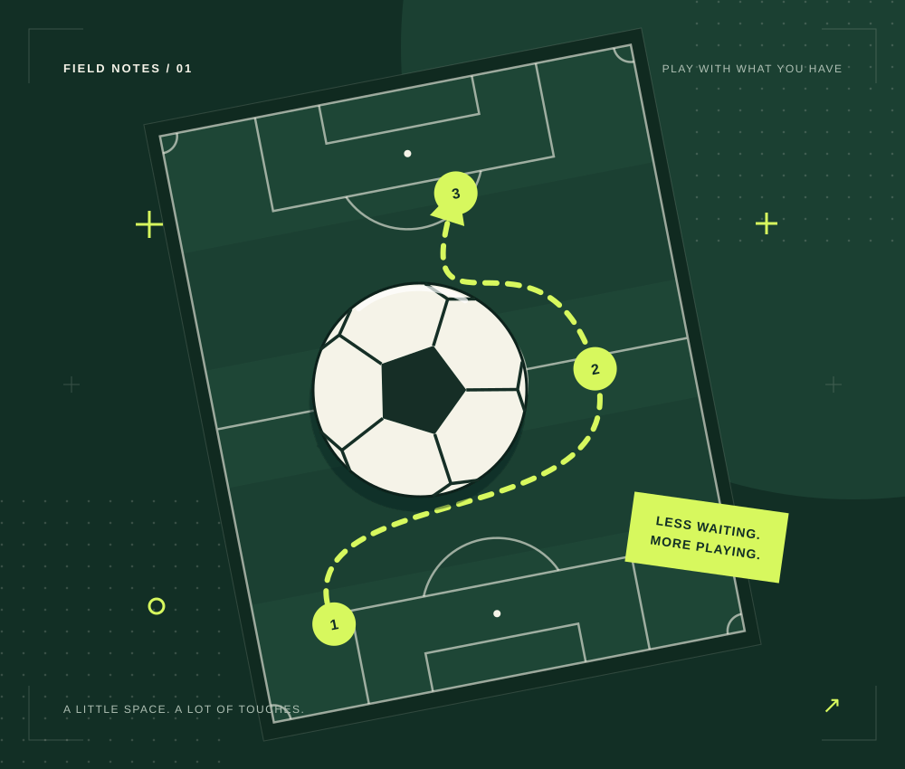
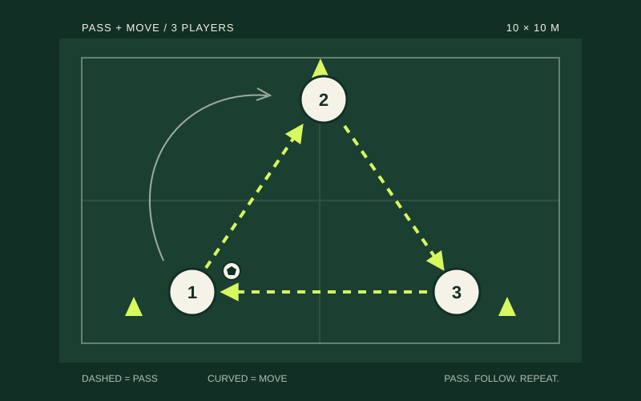
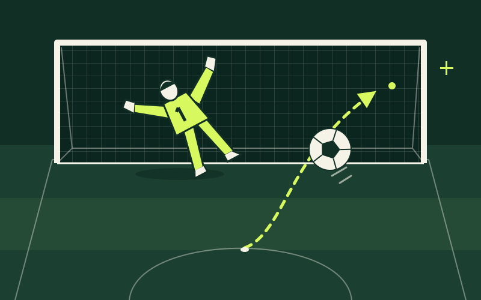

THE EVERYDAY FOOTBALL PROJECT
Less scrolling.
More football.
A ball. A little space. A plan that fits between classes. Make your next practice a good one.
Made by Lian zhihan · For students who love the game.

08simple drills
04skill focuses
15–40minutes, your choice
01 / FIND YOUR NEXT TOUCH
A little practice.
A clear purpose.
Pick one thing to work on. Start slowly, get comfortable, and make it your own.
Find your rhythm.
Give a good pass. Set up your next move with your first touch.
02 / MOVE WITH THE BALLKeep it close.
Take a few cones and explore small touches, turns and changes of direction.
03 / PICK YOUR FINISHMake the next touch count.
Find a clear target and practise a controlled setup and finish.
02 / TURN A GAP INTO A SESSION
Got 25 minutes?
That is a start.
Choose your time, a skill and whether you are practising alone or with a friend. Get five clear blocks, then tick them off as you go.
Make my practice plan
03 / TAKE A PLAY BREAK
Three small games.
One football playground.
Beat the keeper, find the free teammate or arrange your own formation. A little football fun between practice sessions.
Explore the playground
04 / WHY THIS EXISTS
Football does not always
need a full team.
Sometimes it starts with a spare half-hour and someone who wants to play. This is my small guide to making that time count.
Meet the student behind the project ↗